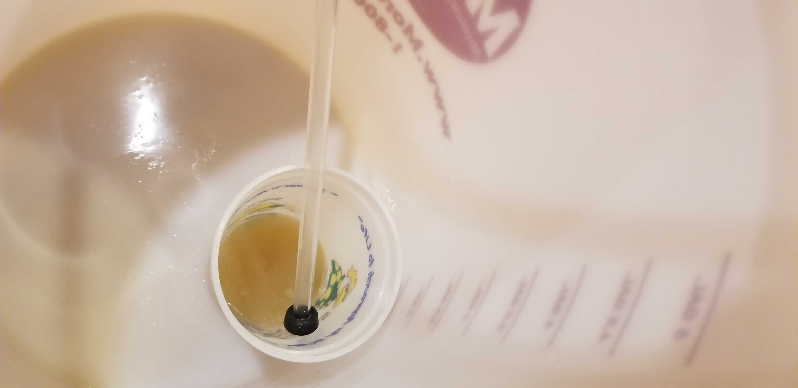
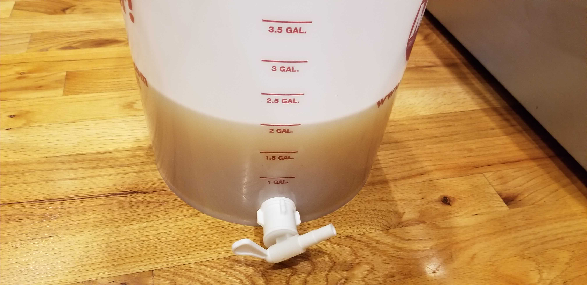
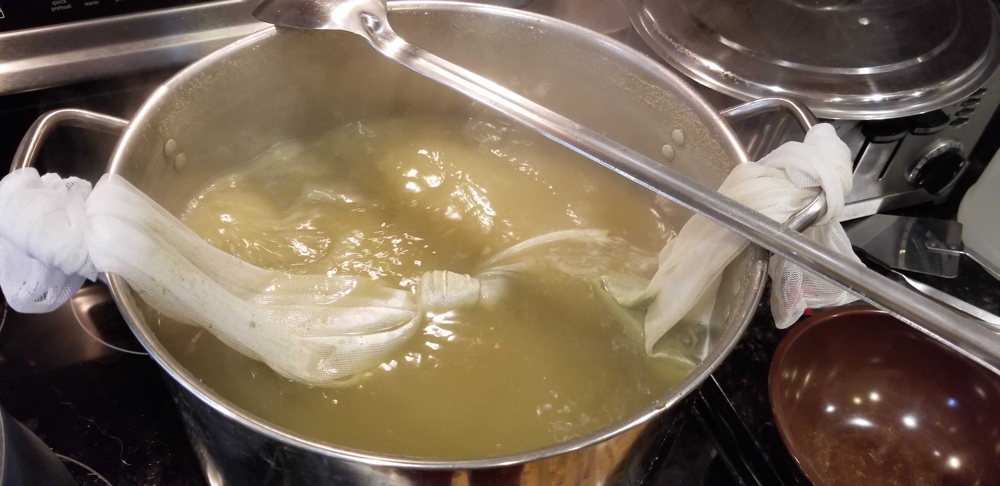

I’m looking to make several simple beers this summer that can appeal to more than just craft beer drinkers, so this time around I’m making a super simple SMaSH blonde ale. This one is just American 2-row malted barley, a little Carapils for body, and leftover Hallertau Mittelfrüh hops from a cream ale recipe last summer, so it’s just a little Bavarian.
Recipe: I’m a ¼ German Ale
General Information
| Batch Size | 3 Gal |
| Batch Type | All Grain |
| Expected OG | 59 |
| Actual OG | 58 |
| Expected FG | 14 |
| Actual FG | 10 |
| ABV | 6.3% |
| IBU | 18 |
| Mash | Single Infusion, 60 min |
| Boil | 60 min |
Ingredients
Ingredients are per 1 gallon where applicable
| Amount | Ingredient |
|---|---|
| Fermentables | |
| 2.33 lb | American 2-row Malt |
| 0.123 lb | Carapils |
| Hops | |
| 1 oz | Hallertau Mittelfrüh 3%* AA |
| Yeast | |
| 1 packet** | White Labs WLP 060 American Ale Yeast |
| Other | |
| 1/2 tab** | Whirlfloc |
* I used this calculator to estimate the remaining alpha acid content of my leftover hops.
** Note that this should be enough for up to 5 gal.
Mash
| Type | Single Infusion |
| Sparge | Batch |
| Water/Grist | 1.5 qt/lb |
| Target pH | 5.38 |
| Target Mash Temp | 150°F |
| Grain Temp | 70°F |
| Strike Water Temp | 161°F |
| Actual Mash Temp | 149°F |
| Strike Water Volume | 2.76°F |
| Sparge Water volume | 2.75°F |
| (Strike) Water Treatment | per 1 gal |
| Calcium Chloride | 3 g |
| Gypsum | 1 g |
Strike Water Additions
All water for this recipe is Reverse Osmosis (RO) water. To add back in the necessary minerals
| Ca+2 | Mg+2 | Na+ | Cl- | SO4-2 | Alkalinity | Residual Alkalinity |
|---|---|---|---|---|---|---|
| 104.0 | 0.0 | 0.0 | 143.2 | 55.2 | -0.0 | -74.1 |
The additions are based on an estimated pH of 6.0 for the RO water. This was decided because, although RO is close to pure water and should be near 7.0, once exposed to air it can drop to 5.5 or 5.0. I went ahead and double checked the water before adding the minerals, and it looked to be about where estimated.
 
The first batch produced almost half the needed wort for the boil. A few cup fulls (probably several liters) of the first runnings went back in to clarify, although I don’t know that it cleared it up that much. I am a little curious if lowering the water-to-grist ratio to 1.25 from 1.5 would help clarify the beer - I’ve noticed a large amount of loose grain in the mash tun that doesn’t contributed to filtering the beer.
The sparge water was poured and the grain bed allowed to settle for 20 minutes before continuing the sparge.
The gravity at this point is 1.043.
Boil
Boil Schedule
| Time Remaining in Boil | Addition |
|---|---|
| 60 min | 0.75 oz Hallertau Mittelfrüh |
| 20 min | 0.1 oz Hallertau Mittelfrüh |
| 10 min | 0.15 oz Hallertau Mittelfrüh |
| 5 min | Whirlflocc |

Fermentation
This is being fermented in a basement that is typically in the low 60°s F (it was 63°F today). The carboy is wrapped in a fermwrap and temperate controlled with an Inkbird controller, set to the range of 68-72 °F.
Unfortunately I forgot to add my typical yeast nutrient and energizer to this batch, but its probably fine since its a small one.
The wort was allowed to sit in the primary for 16 days, mostly because there wasn’t a free keg available. The yeast did a bit more work than anticipated on this guy, ending up with an FG 4 points lower than expected (about an extra 0.4% ABV).
Kegging and Carbonation
This was force carbonated in a basement sitting around ~63°F at 30 PSI for 3 days. This was extra force carbonated with the rolling technique for ~3 minutes at 30 PSI to ensure it’s carbed within a week.
Result
Taste Test 1
This taste test was taken on 6/6/19, 3 days after force carbing the beer. The beer was 64°F.
Appearance
This one was definitely blonde and very hazy. It could use a cold crash for clarity. The head appeared light and fluffy, and then dissipated quickly.
Aroma
Very mild. Herbal with a medicinal hint at the end, although not an unpleasant one.
Taste
Pleasant and mild, up front there is earth and herb - the hops are running the show. This is followed by cracker with a bolder herbal finish.
Mouthfeel
Light-end of medium. Surprisingly dry finish.
Taste Test 2
This test was on 6/7/19 after cooling the beer for 13 hours to 43°F.
Appearance
Pretty much the same, although without the head. I depressurized the keg a bit too much trying to fix the giant head I had in the first taste test.
Aroma
A little maltier. Still herbal, but not medicinal at all this time.
Taste
Earthy and herbal again. A little cracker as well, but a bit sweeter.
Mouthfeel
Light-end of medium again. Dry, although not all in the finish.
Clarity Test 3
This test was on 6/14/19 after letting the beer crash for 48 hours at 43°F and then slowly brought back to room temperature since I typically don’t continuously refill my coolers with ice.
The cold crash cleared this right up. I haven’t had that much luck with crashing before (not that I’ve done it often), but this turned out better than expected.
So, clear, still blonde, with a soft white head that recedes quickly.
Things to do Better
Efficiency
The only real process change today was stirring every 15 minutes during the mash. This actually seemed to help quite a bit. The grain was purchased and milled at the same home brew store as my previous brew, and the efficiency looks to be about 65%, which is more in line with what I typically expect. I would be very curious to find out what the efficiency would be when brewing with grains from a store that I’ve had better experiences with as well.
Clarity
As mentioned in mash above, I’ve been using a rather high water-to-grist ratio of 1.5 quarts per pound of grain. A more typical number would be 1.25 quarts/pound, and I’d be curious if this would help with clarity at all.
Update
Wow, the cold crash did wonders on this beer. I still plan on playing with some other things, but will be planning on cold crashing my beers in the future whenever possible.